В первой части статьи (см. "BYTE/Россия" № 4'2006) были подробно описаны три алгоритма шифрования, по разным причинам представляющие интерес: Square, Skipjack и Blowfish. Рассмотрим еще три алгоритма, которые не менее интересны.
Алгоритмы SHARK и SHARK*
Как и алгоритм Square, SHARK разработан Винсентом Риджменом (Vincent Rijmen) и Джоан Деймен (Joan Daemen) - будущими авторами стандарта AES (алгоритма Rijndael), правда, в соавторстве с еще тремя специалистами, представляющими Католический университет г. Лювен (Leuven) в Бельгии. Это немного более ранняя разработка, чем алгоритм Square, - SHARK появился в 1995 г.
Сходство между SHARK и Square наблюдается, как минимум, в следующем:
- оба алгоритма за один раунд обрабатывают блок целиком, а не половину, как сети Фейстеля;
- в раунде алгоритма SHARK используются преобразования, весьма похожие и на Square, и на Rijndael: XOR с ключом, табличная замена и умножение на фиксированную матрицу.
Спецификация алгоритма не фиксирует его основные параметры. В частности, блок шифруемых данных имеет переменный размер mхn бит (значение m и n станет ясно из описания раунда алгоритма), а обработка данных выполняется с переменным числом раундов R.
В каждом раунде алгоритма r выполняются следующие операции (рис. 1):
1. Наложение ключа раунда Kr на обрабатываемый блок операцией XOR. Ключ раунда также имеет размер mхn бит; подробнее о вычислении ключей раунда будет сказано ниже.
2. Табличная замена, выполняемая следующим образом:
- (mхn)-битный блок данных разбивается на n субблоков по m бит;
- каждый из них "прогоняется" через одну из таблиц замен S1… Sn;
- результаты замен объединяются в (mхn)-битный блок.
3. Умножение данных на фиксированную матрицу A размером nхn бит.
| 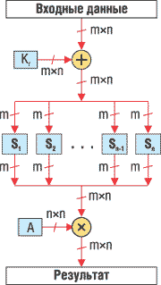 | Рис. 1. Раунд алгоритма SHARK.
|
Обрабатываемые данные можно представить в виде двухмерного байтового массива размером (m/8)xn байт (аналогично алгоритму Square) или в виде одномерного массива из n m-битных элементов. В последнем случае выполняемые в одном раунде операции можно описать следующей формулой:
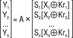
где X1…Xn, Y1…Yn, Kr1…Krn -- m-битные элементы входного значения, результата и ключа раунда соответственно.
После выполнения r раундов алгоритма выполняется финальное преобразование, состоящее из наложения ключа дополнительного раунда KR+1 и последующего умножения на обратную матрицу.
Для расшифрования обратные операции выполняются в обратной последовательности.
Фактически SHARK представляет собой не алгоритм шифрования, а некий шаблон для построения на его основе различных алгоритмов шифрования с описанной выше структурой. Такой вывод можно сделать из-за обилия переменных величин в структуре алгоритма; к переменным в нем относятся следующие параметры:
- описанные выше параметры n, m и r;
- значения таблиц замен. В описании алгоритма приводится пример таблицы замен,
которая заменяет входное значение x обратной величиной в поле GF(2m):
S(x) = x-1 mod 2m.
Однако авторы алгоритма предположили, что при использовании такой таблицы замен возможны уязвимости, поэтому порекомендовали использовать таблицы с более сложным соотношением входного и выходного значений; - значения элементов матрицы A. При этом авторы алгоритма описали ряд критериев, которым должны соответствовать данные элементы для достижения высокой криптостойкости алгоритма;
- размер ключа шифрования, который может достигать 2 х (R+1) х m х n бит (сумма размеров всех ключей раунда), - однако авторы алгоритма посоветовали ограничиться не более чем 128-битным ключом;
- даже для процедуры расширения ключа авторы алгоритма предложили несколько возможных вариантов.
Исходные тексты одного из вариантов алгоритма SHARK, разработанные Винсентом Риджменом, можно загрузить по FTP с ftp.esat.kuleuven.ac.be.
Помимо алгоритма SHARK, его авторы предложили еще алгоритм SHARK*, отличающийся от SHARK лишь зависимостью таблиц замен от ключа шифрования и также не снабженный исчерпывающим описанием.
Видимо, ввиду своей неопределенности, алгоритмы SHARK и SHARK* не вызвали большого интереса у криптоаналитиков; по крайней мере, не обнаружено широко известных работ, связанных с анализом криптостойкости или атаками на данные алгоритмы.
Алгоритм RC5
Алгоритм RC5 интересен по многим причинам. Во-первых, он создан известнейшим криптологом Роном Ривестом (Ron Rivest) - одним из разработчиков асимметричной системы RSA и одним из основателей одноименной фирмы (RSA Data Security), которая, несомненно, входит в число мировых лидеров рынка средств криптографической защиты информации. Аббревиатура RC обозначает, согласно разным источникам, либо Rivest Cipher, либо Ron's Code, т. е. в совокупности "шифр Рона Ривеста".
Во-вторых, аналогично предыдущим алгоритмам шифрования Рона Ривеста RC2 и RC4, алгоритм RC5 получил весьма широкое распространение: по количеству пользователей в мире он стоит в одном ряду с такими известными алгоритмами, как IDEA и Blowfish.
И наконец, на преобразованиях, используемых в RC5, основана последующая разработка компании RSA - алгоритм RC6, который стал финалистом конкурса AES по выбору нового стандарта шифрования США. RC6 не победил в конкурсе, но, видимо, превзойдет своего предшественника по широте использования.
Структура алгоритма
Аналогично алгоритму SHARK, часть основных параметров алгоритма RC5 - переменные. Как пишет автор алгоритма, "RC5 - это несколько различных алгоритмов", поскольку, помимо секретного ключа, в число параметров алгоритма входят следующие:
- размер слова w - RC5 шифрует блоками по два слова, допустимы значения w 16, 32 или 64, причем рекомендуется значение 32;
- количество раундов алгоритма R - в качестве значения допустимо любое целое число от 0 до 255 включительно;
- размер секретного ключа в байтах b - любое целое значение от 0 до 255 включительно.
Наиболее часто, чтобы уточнить параметры алгоритма, используемые в его конкретной реализации, применяется обозначение RC5-w/R/b; например, RC5-32/12/16 обозначает алгоритм RC5 с 64-битным блоком, 12 раундами и 128-битным (16-байтным) ключом. Данную комбинацию параметров Ривест рекомендует в качестве основного варианта алгоритма.
По мнению автора алгоритма, переменные параметры расширяют сферу использования алгоритма, а также сильно сокращают издержки, если необходим переход на более сильный вариант алгоритма - в отличие от DES (основная проблема которого - короткий 56-битный ключ), в программной или аппаратной реализации RC5, поддерживающей переменные параметры, легко было бы заменить ключ более длинным, таким образом устранив проблему. Вот что пишет об этом Рон Ривест: "Фиксированные параметры могут быть не менее опасны [переменных], поскольку их нельзя улучшить при необходимости. Рассмотрим проблему DES: его ключ слишком короток, и нет простого способа увеличить его".
Автор предусмотрел и проблему совместимости реализаций RC5 с различными параметрами - каждое зашифрованное сообщение рекомендуется предварять заголовком, содержащим список значений основных параметров алгоритма. Предполагается, что в этом случае для расшифрования сообщения следует установить параметры из заголовка, после чего (при наличии корректного ключа) сообщение легко будет расшифровать.
Структура алгоритма представлена на рис. 2. Алгоритм представляет собой сеть Фейстеля, в каждом раунде которой выполняются следующие операции:
A = ((A (+) B) <<< B) + K2*r mod 2w,
B = ((A (+) B) <<< A) + K2*r+1 mod 2w,
где r - номер текущего раунда, начиная с 1; Kn - фрагмент расширенного ключа; <<< n - операция циклического сдвига на x бит влево, где x - значение младших log2 w бит n.
| 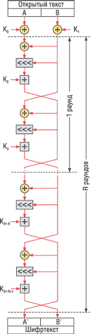 | Рис. 2. Структура алгоритма RC5.
|
Перед первым раундом выполняются операции наложения двух первых фрагментов расширенного ключа на шифруемые данные:
A = A + K0 mod 2w,
B = B + K1 mod 2w.
Стоит отметить, что под словом "раунд" в описании алгоритма Ривест понимает преобразования, соответствующие двум раундам обычных алгоритмов, структура которых представляет собой сеть Фейстеля (см. рис. 2). Это означает, что раунд алгоритма RC5 обрабатывает блок целиком, тогда как типичный раунд сети Фейстеля обрабатывает только один субблок - обычно половину блока, реже его четверть.
Алгоритм поразительно прост - в нем используются только операции сложения по модулю 2 и по модулю 2w, а также сдвиги на переменное число бит. Последняя из операций представляется автором алгоритма как революционное решение, не использованное в более ранних алгоритмах шифрования (до алгоритма RC5 такие операции использовались только в алгоритме Madryga, не получившем широкой известности): сдвиг на переменное число бит - это весьма просто реализуемая операция, которая, однако, существенно усложняет дифференциальный и линейный криптоанализ алгоритма. Простота алгоритма может рассматриваться как его важное достоинство - простой алгоритм легче реализовать и легче анализировать на предмет возможных уязвимостей.
Для расшифрования выполняются обратные операции в обратной последовательности, т. е. в каждом раунде r (с обратной последовательностью раундов) выполняются следующие операции:
B = ((B - K2*r+1 mod 2w) >>> A) (+) A,
A = ((A - K2*r mod 2w) >>> B) (+) B,
где >>> n - аналогичная описанной выше (<<< n) операция побитового циклического сдвига вправо.
Соответственно после R раундов выполняются следующие операции:
B = B - K1 mod 2w,
A = A - K0 mod 2w.
Алгоритм RC5 и некоторые его варианты запатентованы; патенты принадлежат фирме RSA Data Security.
Процедура расширения ключа
Процедура расширения ключа незначительно сложнее собственно шифрования. Расширение ключа выполняется в несколько этапов.
Этап 1. Выравнивание ключа шифрования, в рамках которого ключ шифрования, если его размер в байтах b не кратен w/8 (т. е. размеру слова в байтах), дополняется нулевыми байтами до ближайшего большего размера c, кратного w/8.
Этап 2. Инициализация массива расширенных ключей K0…K2*R+1, которая выполняется следующим образом:
K0 = Pw,
Ki+1 = Ki + Qw,
где Pw и Qw - псевдослучайные константы, образованные путем умножения на 2w дробной части и последующего округления до ближайшего нечетного целого двух математических констант (e и f соответственно). В спецификации алгоритма приведены вычисленные константы для возможных значений w:
P16 = B7E1*,
Q16 = 9E37,
P32 = B7E15163,
Q32 = 9E3779B9,
P64 = B7E151628AED2A6B,
Q64 = 9E3779B97F4A7C15.
* Шестнадцатеричные значения.
Этап 3. Циклически выполняются следующие действия:
A = Ki = (Ki + A + B) <<< 3,
B = KCj = (KCj + A + B) <<< (A + B),
i = i + 1 mod (2 * R + 1),
j = j + 1 mod c,
где i, j, A и B - временные переменные, их начальные значения равны нулю; KC - выровненный на этапе 1 ключ шифрования.
Количество итераций цикла N определяется как N = 3 * m, где m - максимальное из двух значений: c либо (2 х R + 1).
Криптоанализ алгоритма
Считается, что именно революционная идея сдвига на переменное число бит привлекла внимание криптоаналитиков к алгоритму RC5 - он стал одним из алгоритмов, наиболее изученных на предмет возможных уязвимостей.
Начало криптоанализу алгоритма RC5 было положено сотрудниками RSA Laboratories (научного подразделения фирмы RSA Data Security) Бертоном Калиски-младшим (Burton S. Kaliski Jr.) и Икван Лайзой Ин (Yiqun Lisa Yin). В период с 1995 по 1998 г. они опубликовали ряд отчетов, в которых подробно проанализировали криптостойкость алгоритма RC5. Сделанные из них выводы приведены ниже.
RC5 почти невозможно вскрыть методом линейного криптоанализа. Во многом это свойство алгоритма предопределено наличием операции циклического сдвига на переменное число бит. Однако дальнейшие исследования показали, что существует класс ключей, при использовании которых алгоритм можно вскрыть линейным криптоанализом.
Дифференциальный криптоанализ существенно более эффективен при атаках на алгоритм RC5. Калиски и Ин предложили атаку на алгоритм RC5-32/12/16, для которой требовалось 263 пар выбранных открытых текстов и соответствующих им шифртекстов. Этот результат улучшили Ларс Кнудсен (Lars R. Knudsen) и Уилли Мейер (Willi Meier), которым для атаки потребовалось 254 выбранных открытых текстов. Они же нашли несколько классов слабых ключей, упрощающих дифференциальный криптоанализ. А наилучшим результатом стал криптоаналитический метод, предложенный криптологами Алексом Бирюковым (Alex Biryukov) и Эйялом Кушилевицем (Eyal Kushilevitz), в котором необходимо 244 выбранных открытых текстов для успешной атаки. Тем не менее все описанные выше атаки не слишком практичны - для их выполнения требуется огромное число выбранных открытых текстов. Бирюков и Кушилевиц считают, что для обеспечения полной невскрываемости алгоритма дифференциальным криптоанализом достаточно выполнения 18-20 раундов вместо 12.
На основании того факта, что на ряде платформ операция циклического сдвига на переменное число бит выполняется за различное число тактов процессора, изобретатель метода вскрытия алгоритмов шифрования по времени исполнения Пол Кохер (Paul C. Kocher) высказал предположение о возможности атаки по времени исполнения на алгоритм RC5 на таких платформах. Два варианта подобной атаки были сформулированы криптоаналитиками Говардом Хейзом (Howard M. Heys) и Хеленой Хандшух (Helena Handschuh), которые показали, что секретный ключ можно вычислить, выполнив около 220 операций шифрования с высокоточными замерами времени исполнения и затем от 228 до 240 тестовых операций шифрования. Однако Калиски и Ин предложили весьма простое "противоядие" - принудительно выполнять все сдвиги за одинаковое число тактов (т. е. взять наиболее медленный из возможных сдвигов - это, несомненно, несколько снизит среднюю скорость шифрования). Аналогичную методику противодействия атакам по времени исполнения советует и сам Кохер.
Таким образом, наиболее реальный метод взлома алгоритма RC5 (не считая вариантов с небольшим числом раундов и с коротким ключом) - полный перебор возможных вариантов ключа шифрования. Это означает, что у алгоритма RC5 практически отсутствуют недостатки с точки зрения стойкости. Косвенно этот вывод подтверждается тем, что достаточно много исследований стойкости алгоритма было направлено против вариантов с усеченным числом раундов: такие варианты обычно исследуются в случае отсутствия серьезных уязвимостей у полноценных вариантов алгоритма.
Было немало и других исследований данного алгоритма, причем подавляющее их большинство применялось к 64-битной версии алгоритма (для w = 32). Это не означает, что RC5 со 128-битным блоком шифруемых данных существенно менее изучен - результаты исследований показывают, что 128-битный вариант RC5 с достаточным числом раундов вскрыть существенно сложнее 64-битного. Например, Бирюков и Кушилевиц предложили атаку на алгоритм RC5-64/16/16 на основе 263 выбранных открытых текстов, что достаточно нереально для практического применения.
Варианты RC5
Структура алгоритма RC5, несмотря на свою простоту, представлялась многим криптологам как поле для возможных усовершенствований. Соответственно появилось множество известных вариантов алгоритма RC5, в которых преобразования в "пол-раундах" классического RC5 несколько изменены.
1. Алгоритм RC5XOR, в котором сложение с ключом раунда по модулю 2 заменено операцией XOR (рис. 3):
A = ((A (+) B) <<< B) Е K2*r mod 2w **.
** Здесь и далее в качестве примера приведено только преобразование для вычисления левого субблока; правый вычисляется в следующей половине раунда аналогичным образом.
| 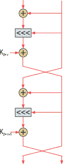 | Рис. 3. Раунд RC5XOR.
|
Данный алгоритм оказался менее стоек, чем RC5, как к линейному, так и к дифференциальному криптоанализу. В частности, Бирюков и Кушилевиц предложили атаку методом дифференциального криптоанализа, вскрывающую алгоритм RC5XOR-32/12/16 на основе 228 выбранных открытых текстов.
2. RC5P, в котором сложение левого и правого обрабатываемых субблоков операцией XOR заменено сложением по модулю 2w (рис. 4):
A = ((A + B mod 2w) <<< B) + K2*r mod 2w.
Алгоритм оказался так же стоек, как и RC5, к линейному криптоанализу, но значительно слабее к дифференциальному.
| 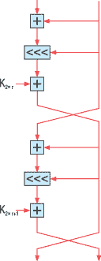 | Рис. 4. Раунд RC5P.
|
3. RC5PFR, отличающийся от RC5 циклическим сдвигом на фиксированное, а не на переменное число бит (рис. 5):
A = ((A (+) B) <<< sr) + K2*r mod 2w,
где sr - число бит циклического сдвига, которое может быть различным в разных раундах алгоритма; в этом случае последовательность s1…sR будет дополнительным параметром алгоритма.
| 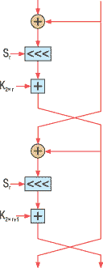 | Рис. 5. Раунд RC5PFR.
|
Данный вариант алгоритма RC5 не слишком хорошо изучен, однако эксперты предполагают, что алгоритм RC5PFR нестоек к дифференциальному криптоанализу.
4. RC5KFR, в котором число бит сдвига - функция ключа шифрования KC, т. е. для каждого ключа шифрования число бит сдвига фиксировано (может быть различным для разных раундов алгоритма) (рис. 6):
A = ((A (+) B) <<< sr(КС)) + K2*r mod 2w.
| 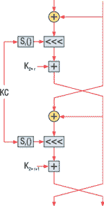 | Рис. 6. Раунд RC5KFR.
|
RC5KFR также не слишком изучен, однако считается, что во многих случаях (особенно при недостаточно большом количестве раундов) криптоанализ данного варианта алгоритма RC5 сводится к анализу алгоритма RC5PFR, что не внушает уверенности в его стойкости.
5. RC5RA, в котором циклический сдвиг происходит на переменное число бит, определяемое не значением младших log2 w бит другого субблока, а некоей функцией f(), обрабатывающей в качестве входного значения все биты другого субблока (рис. 7):
A = ((A (+) B) <<< f(B)) + K2*r mod 2w,
| 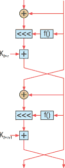 | Рис. 7. Раунд RC5RA.
|
Этот вариант алгоритма тоже недостаточно изучен (и, видимо, уже не будет изучен, поскольку можно утверждать, что RC5 и его варианты сейчас представляют лишь исторический интерес). Но существует мнение, что алгоритм RC5RA может быть еще более стоек, чем RC5, против известных методов криптоанализа.
Продолжение истории
Как было сказано выше, на основе алгоритма RC5 в 1998 г. был разработан алгоритм RC6. RC6 также основан на циклических сдвигах на переменное число бит. Подавляющее большинство криптоаналитических исследований алгоритма RC5 могут быть в различной мере применены и к RC6. У RC6 есть уже своя богатая история, которая заслуживает отдельного описания.
Алгоритм Akelarre
Алгоритм Akelarre разработан коллективом испанских криптографов. Его отличительная особенность в том, что структура алгоритма фактически представляет собой комбинацию преобразований, использованных в двух более ранних алгоритмах, хорошо зарекомендовавших себя с точки зрения криптостойкости: IDEA (см. статью "Алгоритм шифрования IDEA", "BYTE/Россия", № 12/2005) и RC5.
Алгоритм шифрует данные блоками по 128 бит. Как и в алгоритме RC5, часть основных параметров алгоритма - переменные: может изменяться число раундов алгоритма R, а ключ шифрования иметь любой размер, кратный 64 битам (оптимальным считается 128-битный ключ).
Структура алгоритма
Структура алгоритма (рис. 8) весьма похожа на структуру алгоритма IDEA. Разница между ними прежде всего в основных преобразованиях, используемых в каждом раунде алгоритма, а также в размере слова: 32 бита вместо 16-битного слова у IDEA. Шифруемый 128-битный блок разбивается на четыре субблока A, B, C и D по 32 бита, над которыми и выполняются криптографические преобразования.
| 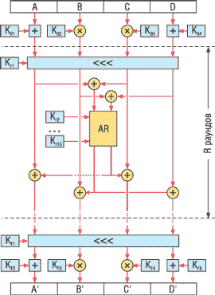 | Рис. 8. Структура алгоритма Akelarre.
|
Алгоритм состоит из начального преобразования, R раундов и финального преобразования.
Начальное преобразование представляет собой наложение фрагментов расширенного ключа K01…K04 на субблоки:
A = A + K01 mod 232,
B = B (+) K02,
C = C (+) K03,
D = D + K04 mod 232.
В каждом раунде алгоритма r выполняются следующие преобразования.
1. Субблоки A, B, C, D объединяются в 128-битный блок, над которым выполняется циклический сдвиг на переменное число бит, определяемое семью младшими битами фрагмента ключа раунда Kr1 (именно применяемые в данном алгоритме операции циклического сдвига на переменное число бит считаются заимствованными у алгоритма RC5).
2. 128-битный блок снова разбивается на четыре фрагмента, после чего вычисляются следующие промежуточные величины:
T1 = A (+) C,
T2 = B (+) D.
3. Значения T1 и T2, а также 12 фрагментов ключа раунда Kr2…Kr13 подаются на вход AR-модуля (addition-rotation structure), выполняющего операции сложения и циклического сдвига на переменное число бит. AR-модуль будет подробно описан ниже.
4. Выходные значения раунда формируются следующим образом:
A = A (+) T2',
B = B (+) T1',
C = C (+) T2',
D = D (+) T1',
где T1' и T2' - выходные значения AR-модуля.
AR-модуль предполагает выполнение следующих операций (здесь они разобраны на примере T1, аналогичные операции выполняются над T2, см. упрощенную схему на рис. 9).
| 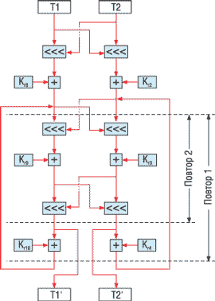 | Рис. 9. AR-модуль.
|
Шаг 1. 31 старший бит T1 циклически сдвигается влево на величину, определяемую текущим значением 5 младших бит T2.
Шаг 2. Результат предыдущего шага складывается с фрагментом ключа раунда Kr8:
T1 = T1 + Kr8 mod 232.
Шаг 3. 31 младший бит T1 циклически сдвигается влево аналогично шагу 1.
Шаг 4. T1 складывается с фрагментом ключа раунда Kr9 аналогично шагу 2.
Шаг 5. 31 старший бит T1 циклически сдвигается влево аналогично шагу 1.
Шаг 6. T1 складывается с фрагментом ключа раунда Kr10 аналогично шагу 2.
Шаг 7. Шаги 3-6 повторяются с использованием Kr11 и Kr12. Затем повторяются шаги 3-5 с использованием фрагмента ключа раунда Kr13. Результат последнего повтора шага 5 становится выходным значением T1'.
Аналогичным образом обрабатывается T2, но с использованием фрагментов ключа раунда Kr2…Kr7 вместо Kr8…Kr13.
Финальное преобразование состоит из циклического сдвига 128-битного блока влево на количество бит, определяемое значением семи младших бит фрагмента ключа KF1, после чего выполняются следующие действия:
A' = A + KF2 mod 232,
B' = B Е KF3,
C' = C Е KF4,
D' = D + KF5 mod 232.
Расширение ключа
Как было сказано выше, алгоритм может использовать ключ любого размера, кратного 64 битам. Однако основной размер ключа - 128 бит, поэтому стоит рассмотреть процедуру расширения именно такого ключа. Данная процедура выполняется следующим образом (рис. 10).
| 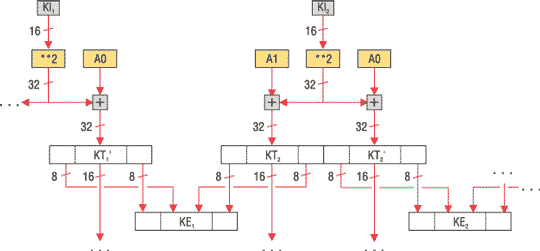 |
| Рис. 10. Расширение ключа алгоритма Akelarre.
|
Шаг 1. Ключ шифрования разбивается на восемь фрагментов по 16 бит KI1…KI8.
Шаг 2. Каждый 16-битный фрагмент возводится в квадрат с получением 32-битного значения, которое складывается с константами С0 и С1 следующим образом:
KTi = KIi2 + C1 mod 232,
KTi' = KIi2 + C0 mod 232,
где константы C0 и C1 определены так:
C0 = A49ED284***,
C1 = 735203DE.
*** Шестнадцатеричные значения.
Шаг 3. Восемь младших и восемь старших бит временных значений KTi и KTi' формируют фрагменты предварительного расширенного ключа KE1…KE8: KEi - результат конкатенации следующих величин:
- 8 младших бит KTi',
- 8 старших бит KTi',
- 8 младших бит KT(i mod 8)+1,
- 8 старших бит KT(i mod 8)+1.
Шаг 4. Средние 16 бит временных значений обрабатываются аналогично KI1…KI8 для получения новых значений фрагментов предварительного расширенного ключа (с незначительными отличиями - см. рис. 10).
Шаг 5. Ключи K01…K04, Kr1…Kr13 (для каждого раунда) и KF1…KF5 заполняются поочередно вычисляемыми фрагментами KE1…KE8.
Процедура расширения ключа выглядит достаточно сложной. Однако данная процедура имеет существенный недостаток - по получаемым в результате криптоаналитических вычислений частям ключей раунда можно восстановить соответствующие им биты ключа шифрования; данное свойство эксплуатируется в описанных ниже атаках на алгоритм.
Криптоанализ алгоритма
Алгоритм Akelarre был представлен в 1996 г., а уже в следующем году Нильс Фергюсон (Niels Ferguson) и Брюс Шнайер (Bruce Schneier) описали атаку на него, позволяющую вскрыть алгоритм на основе не более ста выбранных открытых текстов и требующую выполнения 242 операций шифрования. Фергюсон и Шнайер сделали вывод о неприменимости алгоритма Akelarre (поскольку найденная ими атака вполне реальна) и предложили несколько путей усовершенствования алгоритма, в том числе полную переработку особенно слабой процедуры расширения ключа. Разработчики Akelarre создали новую версию в том же 1997 г., однако и она оказалась довольно слабой.
Еще более серьезную атаку описали Ларс Кнудсен и Винсент Риджмен. Они нашли способ раскрытия ключа алгоритма с вероятностью около 70% на основе всего около 1000 блоков шифртекста при наличии некоторой информации о соответствующих им открытых текстах (например, достаточно знать, что это английский текст в ASCII-кодировке). Стоит сказать, что по сравнению с другими видами атак на алгоритмы шифрования атака на основе только шифртекста наиболее легко реализуема на практике, поскольку для получения нужной для атаки информации злоумышленнику достаточно простого прослушивания канала, по которому передается зашифрованная информация. Удивителен и тот факт, что обе атаки практически не зависят ни от числа раундов, ни от размера ключа алгоритма.
Статья с описанием атаки Кнудсена и Риджмена называется Two Rights Sometimes Make a Wrong, что можно перевести примерно так: "Иногда два плюса дают минус". Удивительно, но алгоритм Akelarre, сочетающий в себе преобразования двух хорошо известных и криптографически стойких алгоритмов, оказался впечатляюще слаб.